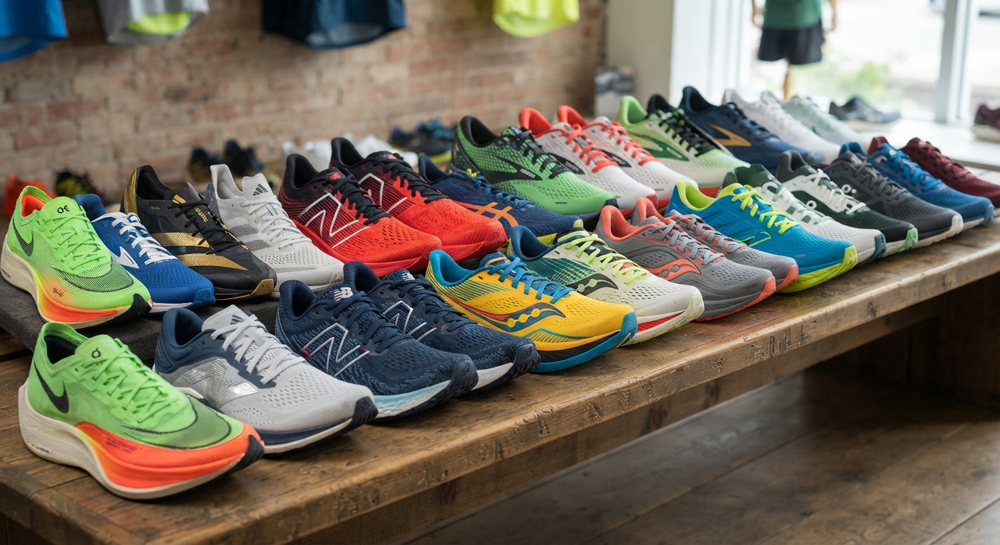
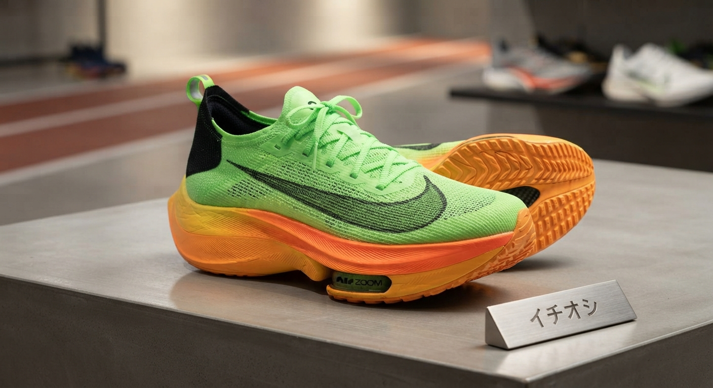

ランニングシューズ
シーズンインの前に、
シーズンインの前に、
走る一足を選ぼう。
山形県村山市の「富士スポーツ 村山店」。新作モデルも、お買い得品も。ご家族で相談しながら選べるお店です。
電話で在庫を確認する ランニングシューズを見る
イチオシ
ランニングシューズは、
ランニングシューズは、
富士スポーツ 村山店で。
毎日のジョギングから、陸上競技の短距離用スパイクまで。走る人のための一足を、店頭でお選びいただけます。

- 新作モデルを取り揃え人気のモデルは数に限りがあります。気になる一足は、早めのご来店・お問い合わせがおすすめです。
- お買い得品もあります品質はそのまま、お求めやすい価格の商品もご覧いただけます。
- お子さまの陸上用スパイクもご相談ください部活・大会に向けた一足を、ご家族で一緒に選べます。
選ばれている、
3つの理由。
最新モデルに出会える
お客さまからも、新作モデルを買えたという声をいただいています。
お買い得品が見つかる
新作だけでなく、お買い得品もチェックできます。
やさしいスタッフが接客
「優しそうなお父さんが働かれているお店」と、口コミでも評判です。
お客さまの声
★★★★★
息子の陸上競技短距離用スパイク購入の為、伺いました。2025年新作モデルの在庫が少なくなって来ており、購入が厳しいかも？と思いましたが、なんとか、最後の１足GET出来ました。シーズンイン間近、危なかったぁー。お買い得品もあり、優しそうなお父さんが働かれているお店。素敵な買い物ができました！ありがとうございました。口コミより
店舗情報
| 店名 | THE EC MALL 富士スポーツ 村山店 |
|---|---|
| 住所 | 山形県村山市楯岡新町1-10-2 |
| 電話番号 | 0237-55-5805 |
| 定休日 | 毎週月曜日 |
| HP | https://fujisports.co.jp/ |
| メール | info@fujisports.co.jp |
| SNS | X（旧Twitter） |